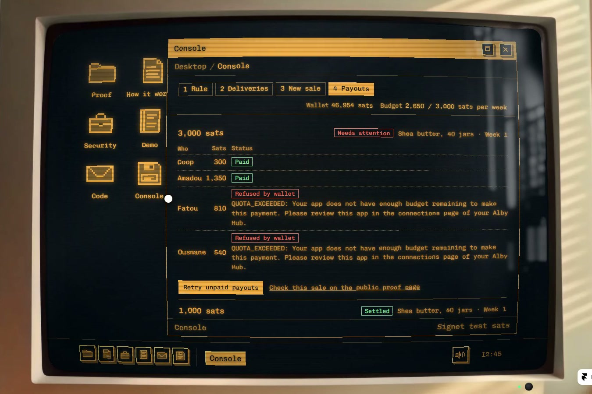
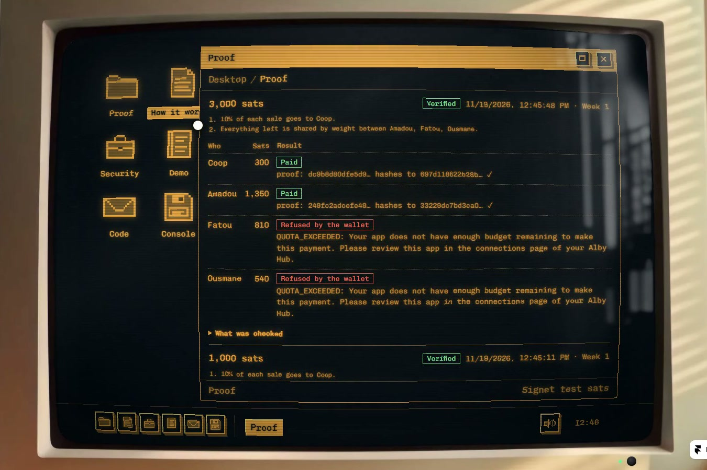

Write a payout rule once, in plain words. Bitcoin Lightning pays everyone, and the wallet itself refuses to overspend.
Project brief for judges and organizers · Dakar Bitcoin Hack 2026 · signet test network, test sats
The problem, in one picture
A group of farmers sells shea butter together. A buyer pays once, in one lump. Then someone must work out who is owed what and pay every farmer, usually by hand, usually late, always on trust. A trader who owes a supplier has the same problem: remember to hand over a slice of every sale until the debt is cleared. The person holding the money is also the person everyone has to believe.
What Mandate does
You write the rule in a sentence:
"10% of each sale goes to Coop. Split the rest between Amadou, Fatou and Ousmane by kg delivered." "20% of each sale goes to my supplier until 500,000 sats are repaid."
An AI (or a built-in reader) only proposes a rule. Mandate shows it in plain English and the owner confirms it. After that the AI is out of the picture.
A sale arrives as a Lightning invoice.
Deterministic code splits it by the confirmed rule and pays each person over Lightning in seconds. It pays each farmer, and repays a supplier's debt from every sale, stopping at the cap.
The payout connection has a spending budget enforced by the wallet. Even a bug in our code cannot pay out more.
Every step is signed and published on Nostr. A public proof page re-checks signatures, the chain, the arithmetic and every Lightning receipt in the visitor's browser, with no wallet and no login.
How a sale flows
Mandate · Dakar Bitcoin Hack 20261 / 3
Why Bitcoin Lightning is central
Mandate needs four things at once, and Lightning with Nostr gives all of them. Take any one away and it becomes a spreadsheet with a promise.
Need
What provides it
Instant, tiny payments
Lightning, so a farmer is paid per sale, not at the end of the week.
A receipt that cannot be faked
The payment preimage hashes to the invoice. The proof page checks it for every payout.
A limit the wallet enforces
Nostr Wallet Connect (NIP-47) connection with a budget. The wallet answers QUOTA_EXCEEDED when it is used up.
A public, tamper-evident record
Hash-chained entries, signed with a Nostr key, published to public relays.
Security by design
AI never decides money. It proposes; a person confirms; deterministic code decides amounts.
Two wallet connections. A listener that can make invoices and hear payments but cannot spend, and a payer that can only pay, with a wallet-set budget.
Plan before payment. The split is written to the signed log before any sat moves.
No double pay. Sales are deduplicated by payment hash, because notifications can replay.
Never trust a payee invoice. The engine decodes it and refuses one whose amount differs from the rule.
Local console protection. The owner console is bound to this computer, checks Host and Origin, and restricts who may frame it.
Verifiable by anyone. One verifier file runs in Node (tests) and in the browser (proof page).
What the demo shows (all on signet, test sats)
Step
Result
Rule confirmed, deliveries 50 / 30 / 20 kg
Signed into the log before any sale.
Sale of 1,000 sats
Settled: co-op 100, Amadou 450, Fatou 270, Ousmane 180. Each has a Lightning receipt.
Sale of 3,000 sats, weekly budget 3,000
Co-op 300 and Amadou 1,350 paid. Fatou 810 and Ousmane 540 refused by the wallet (QUOTA_EXCEEDED), recorded in the log.
Public proof page
Both sales verified from the Nostr relays: signatures, chain, arithmetic, receipts. Refusals shown as refused.
"Try to cheat" button
One payout altered in the browser; the check fails at once.

The wallet refuses the payouts that exceed its budget.

The public proof page verifies both sales, refusals included.
Mandate · Dakar Bitcoin Hack 20262 / 3
What is real, and what is a stand-in
Real
Lightning payments between wallets on a signet Alby Hub (LDK)
Everything uses test sats on signet, not real money
A test wallet plays the buyer; the farmers' "addresses" are test wallets on the same hub
Lightning-address payouts (LNURL-pay) are built but not run on signet
The owner console runs on the owner's own computer (not hosted, to keep the wallet connection off the internet)
No real users yet, and no adoption claims
How it is built
Engine: Node.js. The rule schema and split arithmetic are pure functions shared with the browser (largest-remainder rounding; the sum of payouts plus what the owner keeps always equals the sale, property-tested).
Wallet: Alby Hub (LDK, signet) with @getalby/sdk over Nostr Wallet Connect.
Log and proof:nostr-tools signing and publishing; a browser verifier that trusts nothing the engine says.
Interface: the Nostalgia Computer template remixed in Framer, a retro desktop where every page opens like a file. A Cloudflare Worker serves the desktop and the project's own pages (proof embed, console gateway, demo video).
AI use: built with Claude Code under the author's direction. The product's own AI only proposes a rule from a sentence. The demo voice-over was generated with ElevenLabs.
Run the Lightning-address path on mainnet with a real pilot (a farmers' group or a small trading group); a visible history of rule changes; a phone-friendly owner view; a hosted option that keeps the wallet connection on the owner's device.